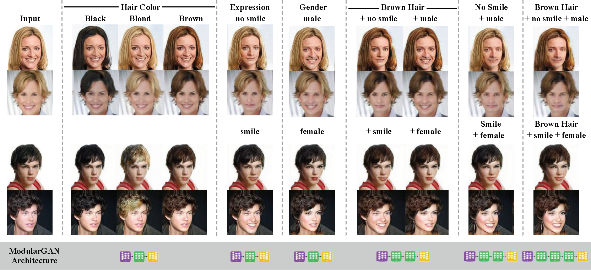

Zequn Jie (揭泽群)
Senior Researcher |
About Me
Currently I am a senior researcher in Tencent AI Lab. My research interests mainly fall in the fundamental computer vision topics, e.g. supervised and weakly-supervised object detection, localization and semantic segmentation. The extension of these problems from images to videos and 3D objects is also exciting for me. Recently I also did some research on stereo matching. I have served as a reviewer of several top conferences and journals, including CVPR, NIPS, ECCV, AAAI, ACM MM and T-IP.Prior to coming to Tencent, I received the Ph.D. degree in Jan. 2017 in National University of Singapore. During my Ph.D. period, I spent most time in Learning and Vision Group, supervised by Prof. Shuicheng Yan and Jiashi Feng. In addition, I was a research fellow in Learning and Vision Group from Jan. 2017 to June 2017, supervised by Prof. Jiashi Feng. Before the Ph.D. period, I received the Bachelor degree in June 2012 from University of Science and Technology of China.
Publications
2018
Modular Generative Adversarial Networks.
Bo Zhao, B. Chang, Zequn Jie, L. Sigal
European Conference on Computer Vision (ECCV), 2018.Modeling Varying Camera-IMU Time Offset in Optimization-Based Visual-Inertial Odometry.
Yonggen Ling, L. Bao, Zequn Jie, F. Zhu, Z. Li, S. Tang, Y. Liu, W. Liu, T. Zhang
European Conference on Computer Vision (ECCV), 2018.Joint Task-Recursive Learning for Semantic Segmentation and Depth Estimation.
Z. Zhang, Z. Cui, C. Xu, Zequn Jie, X. Li, J. Yang
European Conference on Computer Vision (ECCV), 2018.Left-Right Comparative Recurrent Model for Stereo Matching.
Zequn Jie, P. Wang, Y. Ling, B. Zhao, Y. Wei, J. Feng, W. Liu
IEEE Conference on Computer Vision and Pattern Recognition (CVPR), 2018 (oral).Revisiting Dilated Convolution: A Simple Approach for Weakly- and SemiSupervised Semantic Segmentation.
Yunchao Wei, H. Xiao, H. Shi, Zequn Jie, J. Feng, Thomas S. Huang
IEEE Conference on Computer Vision and Pattern Recognition (CVPR), 2018 (spotlight).Policy Optimization with Demonstrations.
Bingyi Kang, Zequn Jie, J. Feng
International Conference on Machine Learning (ICML), 2018.Image-level to Pixel-wise Labeling: From Theory to Practice.
Tiezhu Sun, W. Zhang, Z. Wang, L. Ma, Zequn Jie
International Joint Conference on Artificial Intelligence (IJCAI), 2018.Object Proposal Generation with Fully Convolutional Networks.
Zequn Jie, W. Lu, S. Sakhavi, Y. Wei, E. Tay, S. Yan
IEEE Trans. Circuits Syst. Video Techn. (T-CSVT) 28(1): 62-75 (2018).Learning with rethinking: Recurrently improving convolutional neural networks through feedback.
Xin Li, Zequn Jie, J. Feng, C. Liu, S. Yan
Pattern Recognition 79: 183-194 (2018).
|  |
2017
Deep Self-Taught Learning for Weakly Supervised Object Localization.
Zequn Jie, Y. Wei, X. Jin, J. Feng, W. Liu
IEEE Conference on Computer Vision and Pattern Recognition (CVPR), 2017 (spotlight).Predicting Scene Parsing and Motion Dynamics in the Future.
Xiaojie Jin, H. Xiao, X. Shen, J. Yang, Z. Lin, Y. Chen, Zequn Jie, J. Feng, S. Yan
Advances in Neural Information Processing Systems (NIPS), 2017.FoveaNet: Perspective-aware Urban Scene Parsing.
Xin Li, Zequn Jie, W. Wang, C. Liu, J. Yang, X. Shen, Z. Lin, Q. Chen, S. Yan, J. Feng
International Conference on Computer Vision (ICCV), 2017 (oral).Neural Person Search Machines.
Hao Liu, J. Feng, Zequn Jie, K. Jayashree, B. Zhao, M. Qi. J. Jiang, S. Yan
International Conference on Computer Vision (ICCV), 2017.Video Scene Parsing with Predictive Feature Learning.
Xiaojie Jin, X. Li, H. Xiao, X. Shen, Z. Lin, J. Yang, Y. Chen, J. Dong, L. Liu, Zequn Jie, J. Feng, S. Yan
International Conference on Computer Vision (ICCV), 2017.Multi-Path Feedback Recurrent Neural Networks for Scene Parsing.
Xiaojie Jin, Y. Chen, Zequn Jie, J. Feng, S. Yan
Proceedings of the AAAI Conference on Artificial Intelligence (AAAI), 2017.
 |
2016
Tree-Structured Reinforcement Learning for Sequential Object Localization.
Zequn Jie, X. Liang, J. Feng, X. Jin, W. Lu, S. Yan
Advances in Neural Information Processing Systems (NIPS), 2016.Reversible Recursive Instance-level Object Segmentation.
Xiaodan Liang, Y. Wei, X. Shen, Zequn Jie, J. Feng, L. Lin, S. Yan
IEEE Conference on Computer Vision and Pattern Recognition (CVPR), 2016.Scale-Aware Pixelwise Object Proposal Networks.
Zequn Jie, X. Liang, J. Feng, W. Lu, E. Tay, S. Yan
IEEE Trans. Image Processing (T-IP) 25(10): 4525-4539 (2016).Learning to segment with image-level annotations.
Yunchao Wei, X. Liang, Y. Chen, Zequn Jie, Y. Xiao, Y. Zhao, S. Yan
Pattern Recognition 59: 234-244 (2016).
2014
Robust Scene Classification with Cross-level LLC Coding on CNN Features.
Zequn Jie, S. Yan
Asian Conference on Computer Vision (ACCV), 2014.